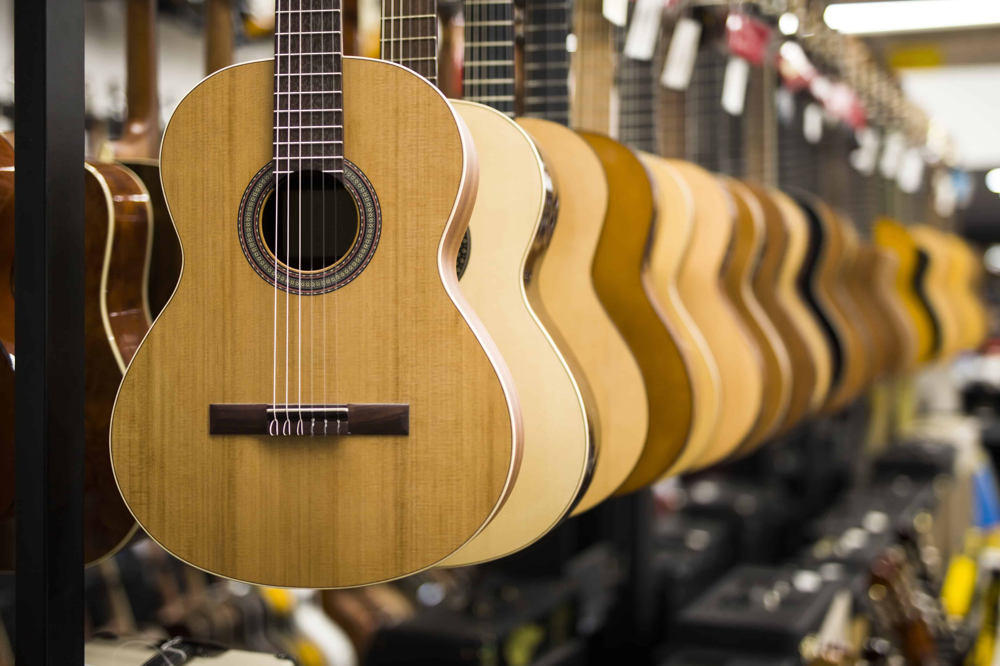

The guitar is a plucked stringed musical instrument that likely originated in Spain in the early 16th century from the guitarra latina, a late-medieval instrument. It has a waisted body and originally had four strings. Over time, it evolved to include six strings, which is now the standard tuning.
Innovations in the 19th century, largely by Antonio Torres, led to the classical guitar, which uses three gut and three metal-spun silk strings, though nylon is also now used. Other forms include the 12-string guitar, the electric guitar, and smaller five-course guitars like the Mexican jarana and South American charango.

The guitar has 6 strings tuned to the notes (going from the lowest string to the highest) E, A, D, G, B and E. The strings on the guitar run from the headstock at the very top of the instrument, to just below a bridge located towards the bottom of the guitar. The strings are wound around pegs that go through the headstock, and these pegs will be turned to tune the instrument.The material used for guitar strings will depend on what sort of sound you want to achieve with your guitar. Strings can be made from various materials including nylon, phosphor bronze, nickel bronze or steel and nickel.
The body of the guitar is made out of wood. Some commonly used woods for the guitar include mahogany, ash, maple, walnut and holly. Some electric guitar makers use exotic tonewoods like Koa, rosewood, padouk and redwood within the building of their guitars. The reason that different types of wood are used is that wood from different trees produce resonances at different frequencies – and as you know if you have read these posts before, musical instruments work by making sound vibrate along or against or with different materials. So these different woods will produce a different tone or sound quality.
All guitars have a fret board between the main body of the instrument and its headstock. There are frets marked out along the length of the fret board. These frets mark out roughly where to put the fingers on your non dominant hand to change the pitch you are playing. In the same way as other string instruments work, the guitarist can play an open string, where they do not put their fingers down on that string at all, or by pressing down on the string. Pressing down on the string will shorten the string, and as the string is shorter it will produce a higher pitched note than the open string.